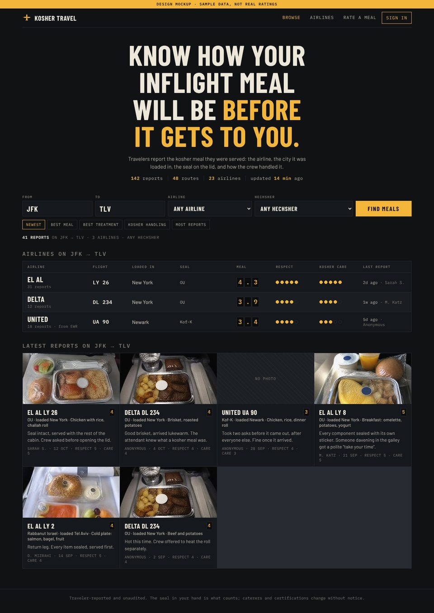
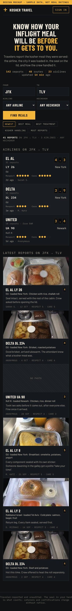
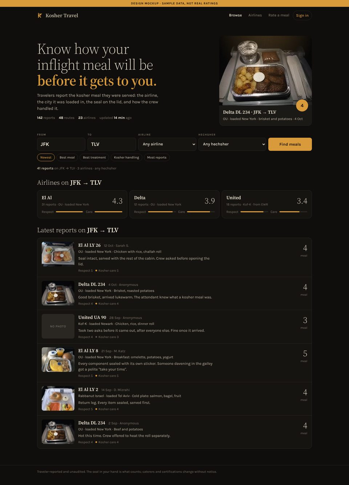
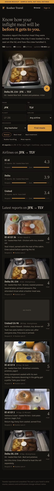
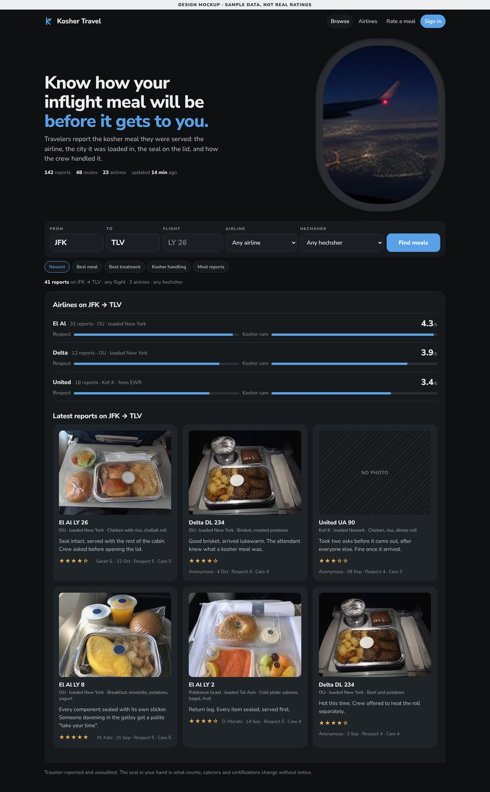
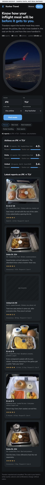

Four directions for Kosher Travel
A site where travelers rate kosher inflight meals: the airline, the flight, the city the meal was loaded in, the hechsher on the seal, a score, photos, and how the crew treated them. These are four candidate designs for its home page.
All four carry the same copy and the same functions, in the same order: the headline, the search (From, To, Airline, Hechsher, sort), the airlines on the route, and the latest reports on it. Every one follows the device's light or dark setting. The only thing that differs is the design, so that is the only thing to choose on.
The Board
The departures board. Condensed uppercase type, square corners, one amber accent, scores as flap digits, treatment as filled dots. Centered headline. In light mode the flap cells are white with ink digits; in dark mode they become the classic black-and-amber flap.




Character
- Mechanical, dense, confident. Reads like a terminal.
- No photography in the hero; the board is the image.
Watch for
- Uppercase condensed type everywhere can tire on long pages.
- The strongest of the four in dark mode, the plainest in light.
The Night Flight
The cabin at night. A light serif, one amber, a reading light on the featured tray, airlines as three quiet tiles and reports as a single column with a thumbnail. Dark mode is the near-black original; light mode is the same cabin in daylight, on warm paper.




Character
- Calm and literary. Built for reading reports, not scanning tables.
- Warmest palette of the four.
Watch for
- Lowest contrast in dark mode.
- Airline comparison is the lightest here: three tiles, no table.
The Board in the Cabin
A's table and flap digits inside a light cabin: an oval window onto the sky, rounded controls, soft greys, one sky blue. In dark mode the cabin dims, the window shows a night sky, and the score cells become the amber flap from A.


Character
- A's clarity with a friendlier frame. The window is the one piece of imagery.
- Rounded cards for the reports.
Watch for
- Two type voices: a condensed table inside a rounded sans page.
The Window Seat
The same light cabin and oval window as C, with no table at all: airlines as score bars, reports as photo cards with star ratings, one rounded sans throughout. The friendliest of the four. Dark mode dims the cabin and shows the night sky.




Character
- Soft, consumer-app familiar. One typeface, stars instead of flap digits.
Watch for
- The most conventional; least distinct from other travel sites.
All ratings, airlines, hechsherim and quotes are invented sample data for design review. The tray and sky photos are AI-generated placeholders at low resolution. Nothing here is a real review.